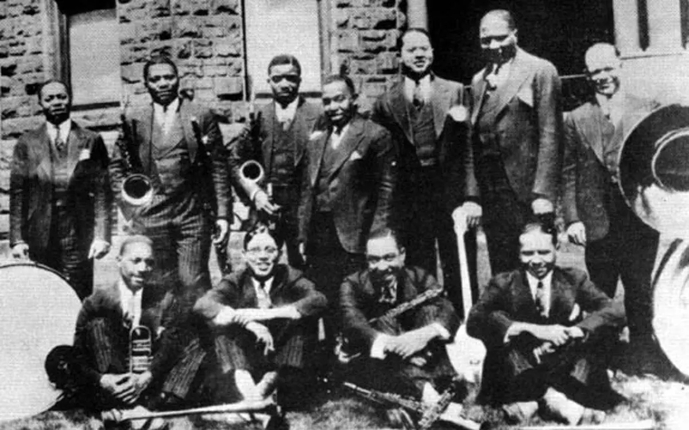
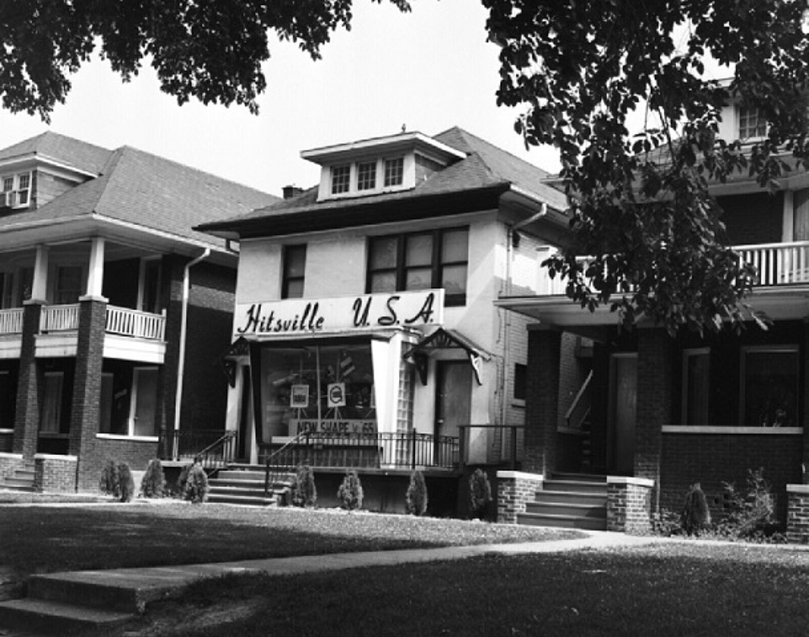

In the early 1900s, Big Band Jazz was a popular form of music in the city of Detroit and across the country. Though its difficult to isolate the origin of Big Band Jazz, a few Detroit bands certainly played a large role in its popularity as pioneers, such as McKinney’s Cotton Pickers.
With the rise of Rock N Roll across the nation, the blues scene in Detroit began to fade. In this era, Berry Gordy’s Motown Records was founded as the Motown genre grew popular. Detroit had a significant contribution to the popularity of Rock N Roll as well. Hank Ballard & the Midnighters . Bill Haley solidified Detroit’s contributions with his famous “Rock Around the Clock”
With the success of Motown Records, Detroit began to form its own brand of soul music. The most notable act was Aretha Franklin. Crowned the “Queen of Soul” she was a pioneer in early soul and is regarded as one of the greatest vocalists of all time. Motown Records saw great success in this era. Many great artists such as Stevie Wonder, Smokey Robinson, and Martha Reeves rose to prominence at this time.
Sean Anderson, better known as Big Sean, speaks on the significance of receiving his “first chain”. In this song income inequality is explored through Big Sean’s first-hand experience. His disadvantaged background makes his “first chain” a special, monumental moment for him as both an artist and a person who had little growing up.
In Saturn, Stevie Wonders explores the idea of escaping the tragedies of earth perpetuated by those in power. In moving to the planet Saturn, Wonder uses Saturn as a symbol of a utopian society. Wonder and many of his contemporaries often expressed Afro-futurist ideals such as those explored in this song. Romanticizing the extraterrestrial is an essential aspect of Afro-futurism. Throughout the track, Wonder alludes to several problems in the world today including subliminal references to issues related to economic inequality. The idea of escaping earth to Saturn would be to the benefit of the marginalized societies of earth who are most often suffering from economic inequality in one form or another.
In Hobo Blues, John Lee Hooker sings about a person who runs away from home and begins a life as a “hobo”. The song is sung in first-person, but it is unclear if Hooker is speaking about himself. Hooker ran away from home at a young age so it is possible the song is about his personal experience. In any case, Hooker explains that the character freighthops—a term that refers to illegally traveling across the country via freight train. This was a practice common for those without the funds to travel across the nation legally. The practice was most common during the Great Depression but continued for decades after. Freighthopping was most common for the economically disadvantaged.